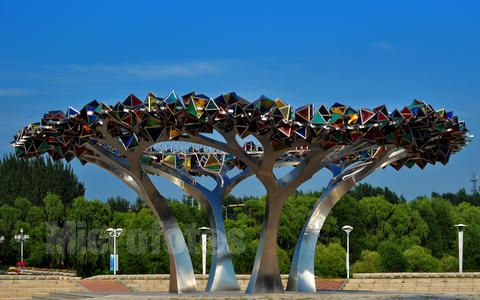
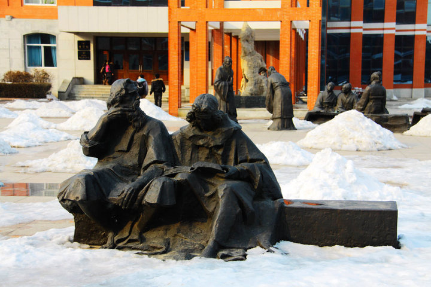
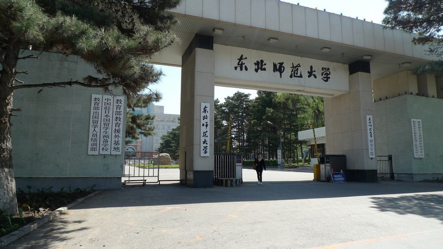
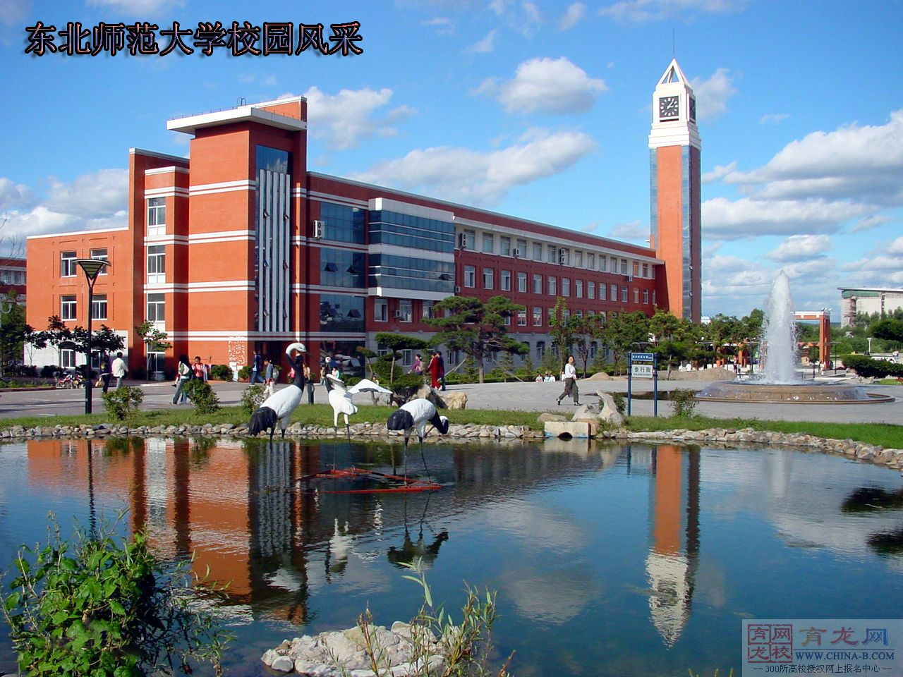
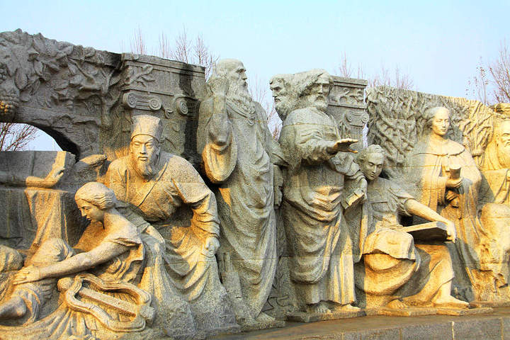

简介 |
 | |||||||||||||||||||||||||||||||||||||||||||||
目录 |
东北师范大学（Northeast Normal University），中华人民共和国教育部直属高校，坐落在吉林省长春市。 建校于1946年， 原名东北大学，是中国共产党在东北地区创建的第一所综合性大学。


东北师范大学的前身是东北大学，是中国共产党在东北创建的第一所综合性大学。 1946年元旦前后，东北局指示著名作家舒群创办“东北公学”，同年2月以“依照民主政府建设新东北之方针，
广集各级学员，以造就行政技术及师资等实际工作人才”为目标开始招 生。
不久东北局决定将“东北公学”改名为“东北大学”，任命张学良将军的胞弟、东北行政委员 会副主席张学思兼任校长，校址设于本溪。
1946年3月15日转至安东（现丹东市）后，继续转移经通化、梅河口、吉林，于4月26日 到达长春。校址设在当时长春著名的建筑之一“海上大楼”。
5月，由于国民党反动军队向公主 岭进犯，
学校再度北撤。27日到达哈尔滨市，除留部分师生接收哈尔滨医科大学，继续北撤。
1946年6月1日，最后一批师生到达北满根据地佳木斯市。学校定址于“满赤医院”，开始了新的历程。在历时3个月，
行程 1500余公里的北撤中，学校的队伍不断壮大，干部、教师始终和同学同甘共苦，
表现出了对革命事业的无限忠诚，显示了党的干部 的优秀品质和作风。
1946年8月， 张如心所率延安大学和华北联合大学的百余名教师、干部胜利地到达哈尔滨市，加入了东北大学的行列，
壮大了 东北大学的力量，形成了一支学术水平高、实力雄厚的教师、干部队伍。党的理论工作者张如心先后担任学校副校长、校长。
1946年，东北大学新生在哈尔滨市的东大办事处门前集合赴佳木斯
1947年5月9日深夜，东北大学学生、刁翎县土改工作团团员李雷，被土匪杀害。中 共刁翎县委为他修建了烈士墓。
1947年5月12日，东北大学学生张建堂在参加土改时，同土匪激战中光荣牺牲。
中 共刁翎县委为他修建了烈士墓，并将刁翎村改名为建堂村。
1947年，东北大学学生在佳木斯过着艰苦的生活。
1948年4月，东北大学宣传队为群众演剧。
1948年4月，东北大学师生300余人下乡参加土地改革。
1948年5月，东北大学学生绘制的解放战争发展形势图，竖立在校门 口。1948年7月，东北局决定将东北大学迁往吉林市，与党在吉林市创建的吉林大学合并，定名为东北大学。
1949年2月，长春大学、沈阳东北大学、长白师范学院文、理、法三个学院及先修班教职员与学生，全部合并到东北大学。
1949年7月，学校由吉 林市迁到长春市。 1949年3月，东北大学学生刘自然率东北学生代表团出席第十四届全国学生代表大会。
1949年10月1日，东北大学师生参加庆祝中华人民共和国成立大会。 1949年11月6日，东北大学青年团、教工会、学生会召开庆祝党公开大会。
1950年4月， 根据国家教育事业发展的需要，学校易名为东北师范大学，隶属教育部，
成为一所以培养新型的中学师资为目标的高等师范院校。
1952年，中国无产阶级革命家、著 名教育家和社会科学家成仿吾到该校担任党委书记兼校长。成老到校后， 带领全校干部 、
教 师实行正规化办学， 狠抓教学改革和教材建设， 加强科学研究的领导和管理， 充实教师队 伍，弘扬延安精神， 使学校有了长足的发展，
成为当时中国最有影响和最具发展实力的师范 大学之一。
1958年，东北师范大学下放归吉林省领导，同年10月学校更名为吉林师范大学。十年动乱期间，学校遭受到严重的摧残和破 坏，
但富于革命传统的广大师生在动乱中风雨同舟、患难与共，为学校后来的发展保存了力量。
1978年2月，经国务院批准， 学校重新划归教育部领导。1980年8月， 经教育部批准，学校恢复了“东北师范大学”的校名。
1996年学校被确定为国家“211工程”首批重点建设的大学；
1999年，学校顺利完成新一 轮内部管理体制改革，建立了与教育规律和经济规律相适应的管理体制和运行机制；
2000 年，启动净月校区建设，进一步增强了学校的办学实力和整体竞争力；
同年，学校被批准试 办研究生院，成为全国53所拥有研究生院的高等院校之一。
1996年，江泽民总书记为东北师范大学题词： “办好师范教育，培养优秀教师，
提高民 族素质”，这是党和人民对东北师范大学的拳拳重托和殷殷厚望。
2007年5月，国务院转发了《教育部直属师范大学师范生免费教育实施办法（试 行）》，
东北师范大学担负起了首届免费师范生教育的重任，东北师范大学将继续发扬优良 的革命传统，为中国的教育事业做出贡献。

截至2015年5月，东北师范大学拥有23个学院（部），71个本科专业。 选择你想看的学院看看具体情况吧~~~
以上是基本的信息，更多的信息去学校的官网看吧(*^__^*) |
校内社团报名表用户名: 密码： |